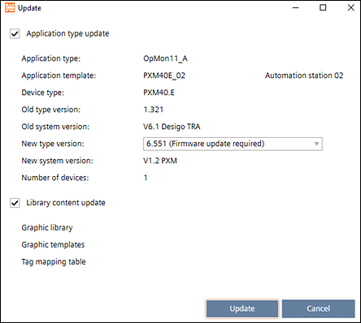
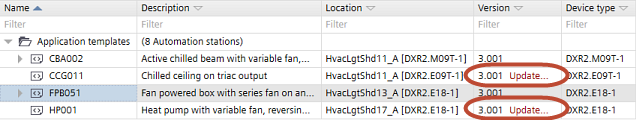

Updating application templates and graphics libraries
When updating application templates or graphics libraries, the system checks for newer versions of the application types from which the application templates are built. If a newer version of the application types is available, the application template is updated.

The update of graphic libraries takes place when the user goes to Engineering of the particular device. In this moment, the new graphic templates will be copied from library to the corrsponding device folder.

Update application templates
- A newer version of the ABT Site library has been installed.
- Go to Building.
- Open the Application & device overview task.
- Click Check for updates.
- The system checks for new versions of all application templates and graphics libraries. If a new version is found, Update displays in the Version column of the list.

- Click Update for each item you want to update.
- A message displays details about the update, e.g. the type version numbers. An info might display telling you that a firmware update is required.
- For operating and monitoring devices select Library content update.
- Select the new version from the New type version drop-down list.
- Click Update.
- The application templates or graphics are updated to the selected library version.
Updating an application template does not augment the application template version number. The value in the Version column is managed by the user.
Modifying template properties